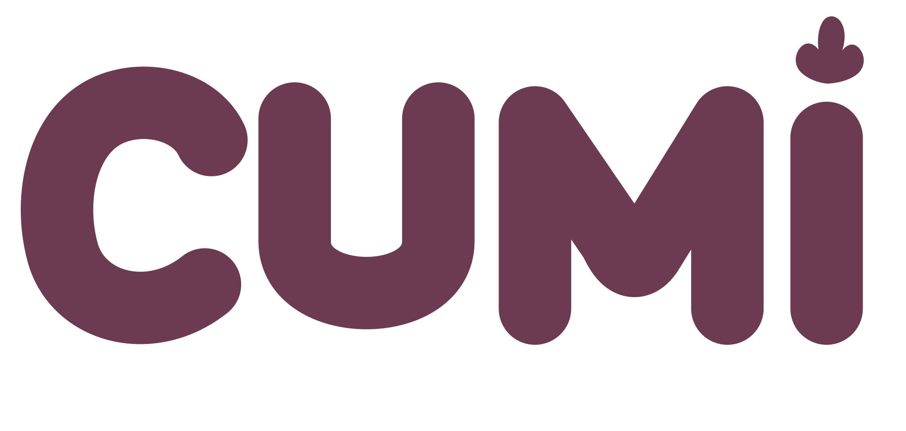

01
2026.08.08
起点 / 被淘汰的方案也值得留下
先经历失败，才知道要守住什么。
早期设计文档将方向定为“前倾豆荚鹅”。三轮候选依次暴露了梨形腹部过大、头嘴主次不清、嘴像鸭嘴兽及色块像披风的问题。候选没有通过全部门槛，记录明确要求返回设计阶段。
课堂判断
把“感觉不对”拆成可观察的轮廓、比例、色块与识别特征，才能决定下一轮究竟改什么。
依据：2026-08-08-goose-ip-design.md；2026-08-08-goose-ip-candidate-review.md

制作全纪录CUMI / 制作过程 / 2026
跟着 CUMI 走完 9 步。看想法怎样变成角色，角色怎样变成一套作品，最后放进可以互动的网站。每一步先看图，再讲怎么做。
开始看第 1 步 ↘基于项目对话、设计文档与交付文件复盘 · 记录截至 2026.09.19 00:36

先看懂这条路
想方向 → 定角色 → 做一套视觉
做动画 → 做产品 → 放进网站
遇到问题，就停下来比较和修改。
01 / 制作步骤
按制作内容讲成9步；实际制作中，有些工作同时进行，也有反复修改。想讲得更细，可以展开29个阶段的过程图和记录。
母版：后续修改都要遵守的标准图；颜色、造型和比例以它为准。
SVG：一种可以放大也不糊的图形文件，适合保存标识。
补帧与透明背景：补帧是在两张动作图之间增加过渡；透明背景让角色能叠在不同网页底色上。
2K／4K：描述像素尺寸。尺寸大不等于细节清楚，更不等于设计正确。
验收：按事先约定逐项检查。文件齐全、看着正确、交互正常，需要分别确认。
Skill 与 Token：Skill 是工作方法说明书；Token 是模型处理内容的计数单位，后面有完整解释。
2026.08.08
起点 / 被淘汰的方案也值得留下
早期设计文档将方向定为“前倾豆荚鹅”。三轮候选依次暴露了梨形腹部过大、头嘴主次不清、嘴像鸭嘴兽及色块像披风的问题。候选没有通过全部门槛，记录明确要求返回设计阶段。
把“感觉不对”拆成可观察的轮廓、比例、色块与识别特征，才能决定下一轮究竟改什么。
依据：2026-08-08-goose-ip-design.md；2026-08-08-goose-ip-candidate-review.md